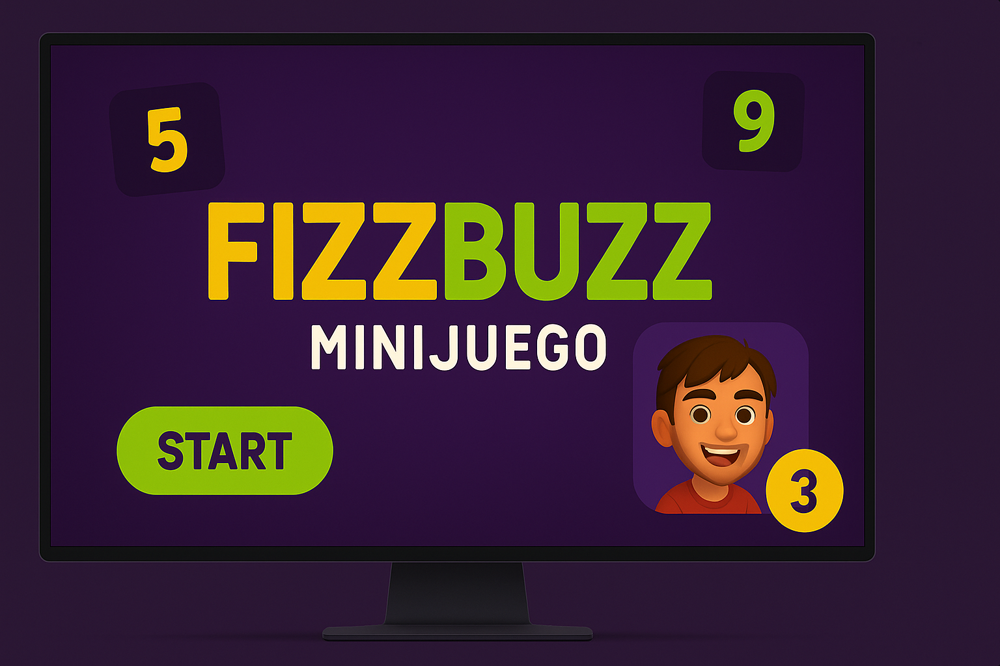
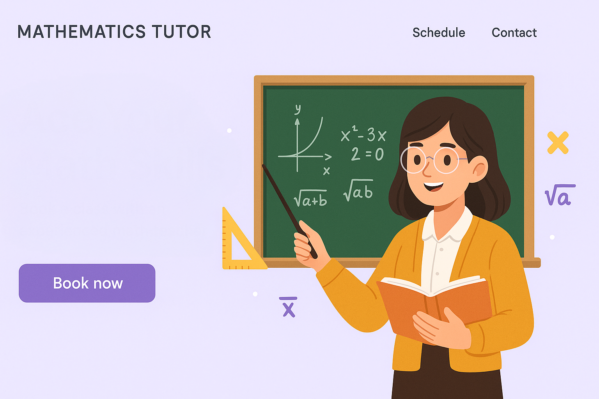
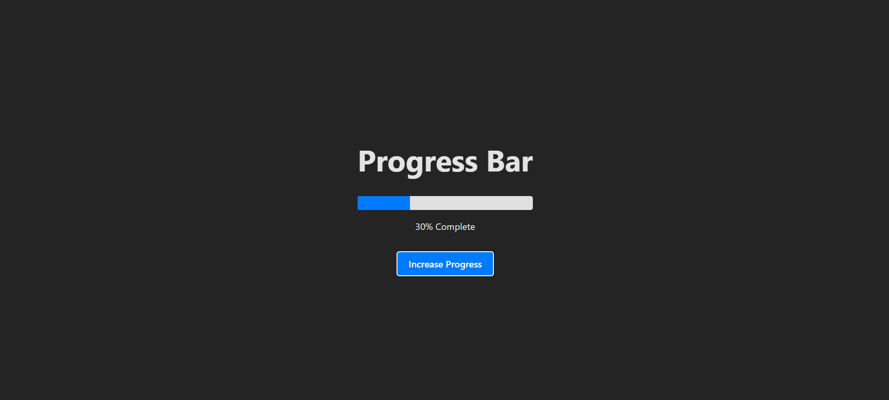
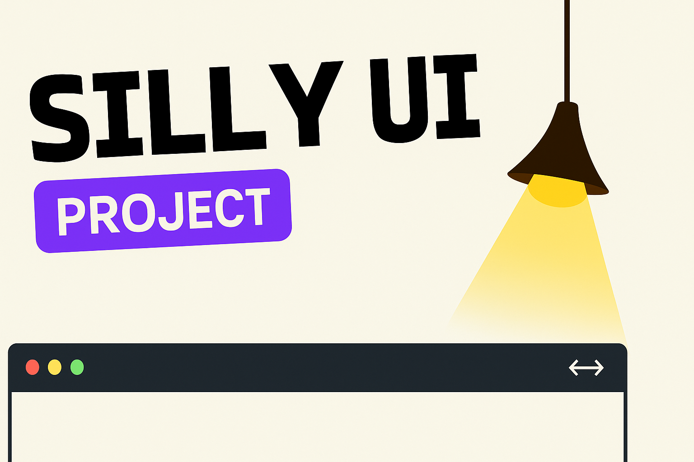

Todos mis proyectos


Chatbot Twilio - Bot para acordar clase
Bot desarrollado con Node.js y Twilio para automatizar la gestión de clases por WhatsApp, incluyendo menú interactivo, base de datos y notificaciones.
Node.jsTwilio APIMySQLChatbotAutomatización

